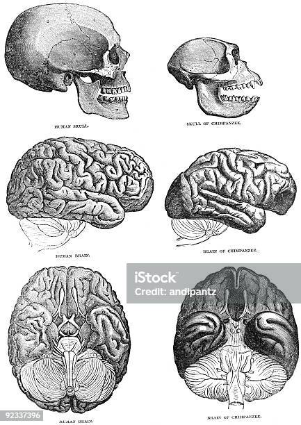

Hominidae
Klik hier
De mensachtige (Hominidae) ook wel de grote mensapen genoemt,
zijn een familie van de orde primaten die de gorilla's, mensen, chimpansees,
orang-oetans, bonobo's en enkele uitgestorven groepen omvatten.
Betekenis

Verschillende herzieningen in de classificatie van
de mensapen hebben ervoor gezorgd dat het gebruik
van de term hominidae in de loop van de tijd varieert.
De oorspronkelijke betekenis van "hominidae" had alleen
betrekking op mensen (Homo) en hun naaste uitgestorven
verwanten. In de jaren negentig werden mensen, apen
en hun voorouders echter als "hominiden" beschouwd.
De vroegere beperkende betekenis is nu grotendeels
overgenomen door de term mensachtigen, die alle leden
van de menselijke clade omvat na de splitsing van de
chimpansees (Pan). De huidige betekenis van ‘hominidae’
omvat alle mensapen, inclusief mensen. Het gebruik varieert
echter nog steeds, en sommige wetenschappers en leken
gebruiken 'hominidae' nog steeds in de oorspronkelijke
beperkende zin; de wetenschappelijke literatuur toont over
het algemeen het traditionele gebruik
tot het begin van de 21e eeuw.
Lichaam
De mensapen zijn staartloze primaten, waarbij de kleinste levende soort de bonobo is
met een gewicht van 30 tot 40 kg, en de grootste de oostelijke gorilla's zijn,
met mannetjes met een gewicht van 140 tot 180 kg. Bij alle mensapen zijn de mannetjes
gemiddeld groter en sterker dan de vrouwtjes, hoewel de mate van seksueel dimorfisme
sterk varieert van soort tot soort. De tanden van de mensachtigen zijn vergelijkbaar
met die van apen en gibbons uit de Oude Wereld, hoewel ze vooral groot zijn bij gorilla's.
Menselijke tanden en kaken zijn aanzienlijk kleiner voor hun formaat dan die van andere apen,
wat een aanpassing kan zijn aan het feit dat ze niet alleen de rol van kaken
bij het jagen en vechten hebben verdrongen door uitgebreid gereedschap,
maar ook aan het eten van gekookt voedsel sinds het einde van het Pleistoceen.